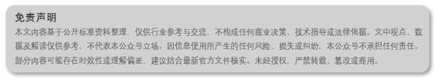

前言
从近期展会和各大厂家的新品发布不难看出，钠电储能产品正越来越多。与之相应，钠电储能标准的重要性也日益凸显。早在2024年，国标GB/T 44265-2024《电力储能电站 钠离子电池技术规范》就已对钠离子储能的技术要求作出规定。下面将对该标准进行解析。如有错漏，请以原文为准，文末附原文链接。
一、这份标准管什么？
标准适用于电力储能用钠离子电池，包括电池单体、电池模块、电池簇、直流舱四个层级。从设计、制造到试验、运行、维护，都按这个来。
核心内容：外观尺寸、电性能、环境适应性、耐久性能、安全要求，以及编码规则、检验规则、标志包装运输贮存。
标准覆盖钠电池储能系统“单颗电芯”到“整个直流舱”。
二、钠电池的“身份证”：编码规则
标准第4章给了一套编码规则。举个例子：
EES-SIB-TMO/AC-L-HS-Cell_3.5V...
拆开看：
-
EES-SIB：电力储能-钠离子电池
-
TMO/AC：正极材料（过渡金属氧化物）/负极材料（无定型碳）
-
L：液态电解质
-
HS：硬壳方形
-
Cell：电池单体
-
后面是标称电压、充放电功率、充放电能量、型号
这套编码把电池的“身份信息”说得明明白白。以后看到钠电池的编码，基本就能知道它是什么材料体系、什么形态、什么参数。
三、技术要求：几个关键指标
3.1 工作环境
电池单体、模块、簇的正常工作温度是 5℃\~45℃，带电部位不能有凝露。海拔超过2000米的话，要满足高海拔性能要求。
3.2 初始充放电效率
这是钠电池性能的核心指标之一。标准对不同层级的能量效率要求如下：
| 层级 | 5℃ |25℃ |45℃ | |----|----|----|----| |电池单体|≥83%|≥93%|≥93%| |电池模块|≥85%|≥94%|≥94%| |电池簇 | - |≥95%| - | |直流舱 | - |≥90%| - |
电池簇的效率要求（95%）比直流舱（90%）高，因为直流舱包含了辅助供电系统的能耗。
3.3 倍率充放电
标准要求钠电池在 2倍额定功率 下充放电，能量保持率不低于95%（单体）或97.5%（模块），效率不低于90%。这说明钠电池的高倍率性能是有保障的。
3.4 循环性能
标准没有直接规定循环寿命的绝对值，而是给出了一套计算方法：基于500次和1000次的充放电能量衰减，推算不同能量保持率对应的循环次数。厂家可以根据这个给出“系列保证值曲线”。
四、安全要求：钠电池的“底线”
安全部分篇幅较大，摘出重点如下，更多信息参考原文：
4.1 过充电、过放电
-
单体过充到充电截止电压的1.5倍或1小时，不能起火、爆炸
-
过放到0V或1小时，不能漏液、冒烟、起火、爆炸
4.2 短路
-
单体用 1mΩ 线路短路10分钟，不能起火爆炸
-
模块还要做 30mΩ 短路30分钟的测试
4.3 挤压、跌落
-
单体在 50kN 挤压力下保持10分钟，不能漏液起火
-
单体从 1.5米 跌落，模块从 2米 跌落，不起火不爆炸
4.4 热失控
标准首次明确：钠电池热失控时表面温度应大于90℃，且热失控后不能起火爆炸。模块内任一电池热失控，不能引发相邻电池热失控。
五、检验规则：出厂、型式、抽样
标准把检验分成三类：
-
出厂检验：每批产品都要做外观、尺寸、25℃初始充放电、报警保护功能
-
型式检验：新产品、厂址变更、停产超一年复产、重大变更时要做，项目很全（单体33项、模块20多项）
-
抽样检验：验证批次一致性，比如工程验收时抽检
检验项目和样品数量，标准附录里给了详细表格，做检测的朋友可以直接用。
六、运输和贮存要注意什么？
-
运输能量状态：20%\~50%，电池簇、直流舱要断开模块间的电气连接
-
贮存能量状态：30%\~50%，每6个月要做一次能量维护
-
贮存环境：20℃\~35℃，湿度小于95%，远离火源热源
写在最后
GB/T 44265-2024 是我国首份电力储能用钠电池技术标准，填补了该领域标准空白。相比锂电池标准，钠电标准在低温性能（5℃效率83%~85%）、倍率性能和热失控温度阈值等方面具有自身特点。该标准的实施，为钠电池储能项目从选型、设计到验收提供了明确的技术依据。
参考标准：GB/T 44265-2024
全文查阅：点击“阅读原文”获取全文信息，信息来源：全国标准信息公共服务平台 https://std.samr.gov.cn
关注本公众号，每日推送专业储能知识
